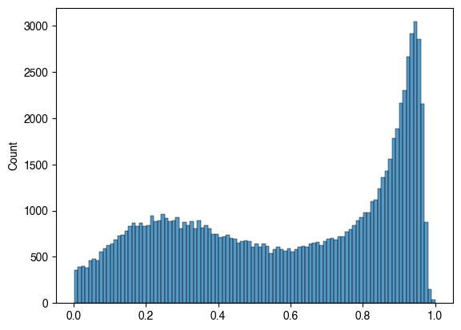
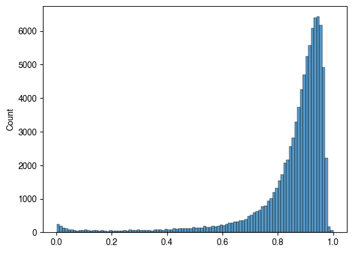
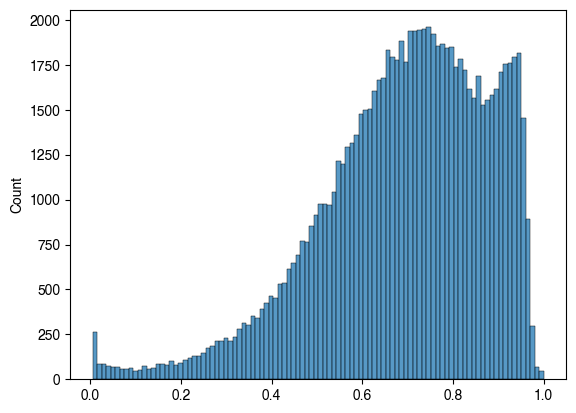
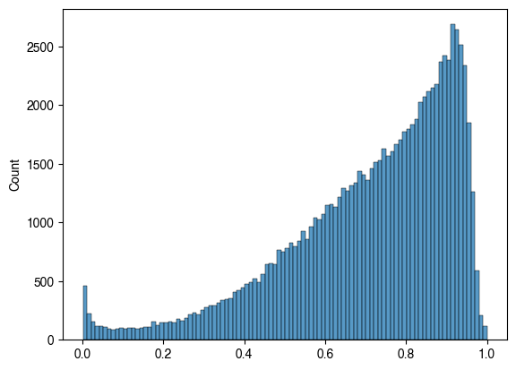
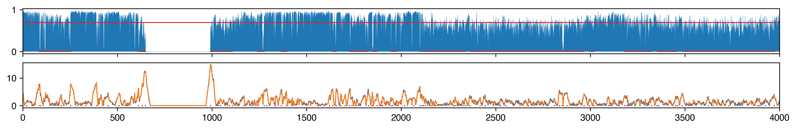
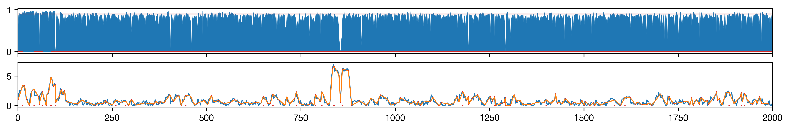
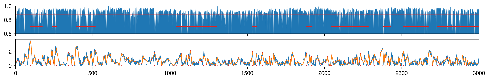
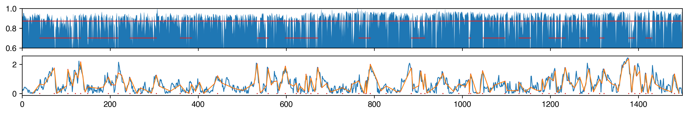
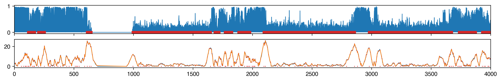
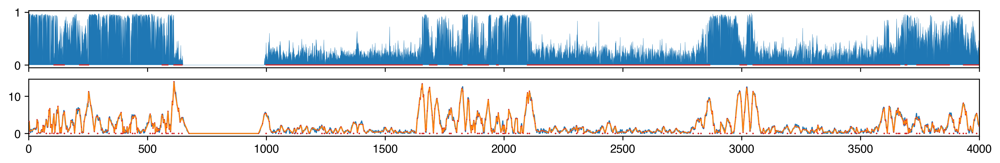

8. PMD calling insulation#
Part of the Fig. 2 chapter — see it for the panel-by-panel map. The first code cell sets ENTEX_ROOT and activates the no-overwrite guard (see the Reproduction guide). Outputs shown are the author’s original run.
# === Reproduction setup — edit ENTEX_ROOT / REF_ROOT for your machine ===
import os, sys
ENTEX_ROOT = os.environ.get('ENTEX_ROOT', '/large_storage/zhoulab/zhoujt/project/ENTEx')
REF_ROOT = os.environ.get('REF_ROOT', '/large_storage/zhoulab/ref')
BOOK_ROOT = os.environ.get('BOOK_ROOT', f'{ENTEX_ROOT}/analysis/HumanCellEpigenomeAtlas')
sys.path.insert(0, BOOK_ROOT)
os.chdir(f'{ENTEX_ROOT}/analysis') # original working directory
import repro_guard # no-overwrite guard (default: skip existing)
import numpy as np
import pandas as pd
from glob import glob
from scipy.sparse import csr_matrix
from concurrent.futures import ProcessPoolExecutor, as_completed
import pysam
import anndata
import seaborn as sns
import matplotlib as mpl
import matplotlib.pyplot as plt
mpl.style.use('default')
mpl.rcParams['pdf.fonttype'] = 42
mpl.rcParams['ps.fonttype'] = 42
mpl.rcParams['font.family'] = 'sans-serif'
mpl.rcParams['font.sans-serif'] = 'Helvetica'
import warnings
warnings.filterwarnings("ignore")
indir = f'{ENTEX_ROOT}/'
group_meta = pd.read_csv(f'{indir}clustering/merged/group_meta.tsv', sep='\t', header=0, index_col=0)
# group_meta = group_meta[['L2_any', 'L1', 'count']]
group_meta['L1_annot'] = group_meta['L1_annot'].str.replace(' ','-').str.replace('/','_')
annot2L1 = group_meta[['L1','L1_annot']].set_index('L1_annot')['L1'].to_dict()
L1annot = group_meta[['L1','L1_annot']].set_index('L1')['L1_annot'].to_dict()
from ALLCools.mcds import MCDS
mcds = MCDS.open(f'{indir}merged_allc/cluster_donor.mcds', var_dim='chrom1k')
mcds
<xarray.MCDS> Size: 93GB
Dimensions: (cell: 940, chrom1k: 3088298, count_type: 2, mc_type: 4)
Coordinates:
* cell (cell) <U16 60kB 'c0-c0-PT-1JKYN' ... 'c9-c9-STL003'
* chrom1k (chrom1k) <U12 148MB 'chr1_0' 'chr1_1' ... 'chrY_57227'
chrom1k_chrom (chrom1k) <U5 62MB ...
chrom1k_end (chrom1k) int64 25MB ...
chrom1k_start (chrom1k) int64 25MB ...
* count_type (count_type) <U3 24B 'mc' 'cov'
* mc_type (mc_type) <U3 48B 'CAN' 'CCN' 'CGN' 'CTN'
Data variables:
chrom1k_da (cell, chrom1k, mc_type, count_type) uint32 93GB dask.array<chunksize=(1, 386038, 1, 1), meta=np.ndarray>
Attributes:
obs_dim: cell
var_dim: chrom1kmcds = mcds.assign_coords(L1=('cell', group_meta.loc[mcds.get_index('cell'), 'L1']))
mcds = mcds.groupby('L1').sum()
# mcds = mcds.assign_coords(chrom10k=('chrom1k', bin_df['chrom1k']))
mcds = mcds.sel({'mc_type':'CGN'})
mcds = MCDS(mcds, obs_dim='L1', var_dim='chrom1k')
mcds
<xarray.MCDS> Size: 2GB
Dimensions: (chrom1k: 3088298, count_type: 2, L1: 35)
Coordinates:
* chrom1k (chrom1k) <U12 148MB 'chr1_0' 'chr1_1' ... 'chrY_57227'
chrom1k_chrom (chrom1k) <U5 62MB 'chr1' 'chr1' 'chr1' ... 'chrY' 'chrY'
chrom1k_end (chrom1k) int64 25MB 1000 2000 3000 ... 57227000 57227415
chrom1k_start (chrom1k) int64 25MB 0 1000 2000 ... 57226000 57227000
* count_type (count_type) <U3 24B 'mc' 'cov'
mc_type <U3 12B 'CGN'
* L1 (L1) object 280B 'c0' 'c1' 'c10' 'c11' ... 'c7' 'c8' 'c9'
Data variables:
chrom1k_da (L1, chrom1k, count_type) float64 2GB dask.array<chunksize=(1, 386038, 1), meta=np.ndarray>
Attributes:
obs_dim: L1
var_dim: chrom1kexclude_chromosome = ['chrX', 'chrY', 'chrM', 'chrL']
mcds = mcds.remove_chromosome(exclude_chromosome)
213286 chrom1k features in ['chrX', 'chrY', 'chrM', 'chrL'] removed.
mcds['chrom1k_da_frac'] = mcds['chrom1k_da'].sel({'count_type':'mc'}) / mcds['chrom1k_da'].sel({'count_type':'cov'})
# .add_mc_frac(normalize_per_cell=False)
bin_df = mcds[['chrom1k_chrom', 'chrom1k_start', 'chrom1k_end']].to_pandas()
bin_df = bin_df[['chrom1k_chrom','chrom1k_start','chrom1k_end']]
bin_df.columns = ['chrom', 'start', 'end']
data = mcds['chrom1k_da_frac'].to_pandas().fillna(0)
print(data.shape)
(35, 2875012)
from pybedtools import BedTool
black_list_path = '/large_experiments/zhoulab/ref/blacklist/hg38-blacklist.v2.bed.gz'
alt_allele_path = f'{REF_ROOT}/hg38/fasta/hg38.altseq.bed'
def remove_region(black_list_path):
feature_bed = BedTool.from_dataframe(bin_df)
black_list_bed = BedTool(black_list_path)
black_feature = feature_bed.intersect(black_list_bed, f=0.2, wa=True)
black_feature_index = black_feature.to_dataframe().set_index(["chrom", "start", "end"]).index
black_feature_id = pd.Index(
bin_df.reset_index()
.set_index(["chrom", "start", "end"])
.loc[black_feature_index][bin_df.index.name]
)
print(black_feature_id.shape[0])
return black_feature_id
black_feature_id = remove_region(black_list_path)
alt_feature_id = remove_region(alt_allele_path)
187135
137403
data.loc[:, data.columns.isin(black_feature_id) | data.columns.isin(alt_feature_id)] = 0
import math
from scipy.stats import ranksums
ws = 25
res = 1000
vmin = 0.05
pvmax = 1
def callpmd_worker(chrom, ct):
chrfilter = (bin_df['chrom']==chrom)
datachr = data.loc[ct, chrfilter].values[np.argsort(bin_df.loc[chrfilter, 'start'])].copy()
# datachr = np.abs(datachr - 0.5) + 0.5
conv = np.convolve(datachr, np.ones(ws), mode='valid') ##chrlen-ws+1; i is average of datachr[i:(i+ws)]
diff = np.abs(conv[:-ws] - conv[ws:]) ##chrlen-2ws+1; 0 -> datachr[ws], i is diff between datachr[i:(i+ws)] and datachr[(i+ws):(i+2ws)]
print(diff.shape[0], datachr.shape[0])
s, t = 0, diff.shape[0]
turn = [s]
while s<(t-2):
last = math.hypot(1, diff[s+1]-diff[s]) ## initialize with 2 points
for k in range(s+2,t):
slope = (diff[k] - diff[s]) / (k - s)
l = np.abs([diff[i] - diff[s] - slope*(i-s) for i in range(s+1, k)]).sum()
tmp = math.hypot(k-s, diff[k]-diff[s]) - l
if (tmp<last):
s = k - 1
last = math.hypot(1, diff[s+1]-diff[s])
turn.append(s)
break
else:
last = tmp
if k>=(t-1):
s = k
turn.append(s)
turn = np.array(turn) ##position in diff, 0 -> datachr[ws]
pv = np.array([True] + [ranksums(datachr[xx:(xx+ws)], datachr[(xx+ws):(xx+2*ws)])[1] for xx in turn[1:-1]] + [True])
localmax_filter = np.logical_and(diff[turn[1:-1]]>diff[turn[:-2]], diff[turn[1:-1]]>diff[turn[2:]])
localmax_filter = [True] + localmax_filter.tolist() + [True] ## shape n_turn
localmax = turn[np.logical_and(pv<pvmax , localmax_filter)]
print(localmax.shape)
cumsum = np.cumsum(datachr)
segave = (cumsum[localmax[1:]+ws] - cumsum[localmax[:-1]+ws]) / (localmax[1:] - localmax[:-1]) ## shape n_localmax-1, i is ave mcg between localmax[i] and localmax[i+1]
selseg = np.logical_and(segave<vmax, segave>vmin)
pmdstart = localmax[1:-1][np.logical_and(~selseg[:-1], selseg[1:])] ## index in localmax
if selseg[0]:
pmdstart = [localmax[0]] + list(pmdstart)
pmdend = localmax[1:-1][np.logical_and(selseg[:-1], ~selseg[1:])] ## index in localmax
if selseg[-1]:
pmdend = list(pmdend) + [localmax[-1]]
pmdchr = (pd.DataFrame(np.array([pmdstart, pmdend]), index=['start', 'end']).T) + ws
pmdchr['ave'] = (cumsum[pmdchr['end']] - cumsum[pmdchr['start']]) / (pmdchr['end'] - pmdchr['start'])
pmdchr[['start', 'end']] = pmdchr[['start', 'end']] * res
pmdchr['chrom'] = chrom
return datachr, diff, turn, localmax, pmdchr
datatmp = data.loc[:, ~(data.columns.isin(black_feature_id) | data.columns.isin(alt_feature_id))]
cgmean = datatmp.mean(axis=1)
cgmedian = datatmp.median(axis=1)
# cgmean = np.abs(datatmp - 0.5).mean(axis=1) + 0.5
# cgmedian = np.abs(datatmp - 0.5).median(axis=1) + 0.5
ct = 'c2'
tmp = np.random.choice(data.loc[ct].values, 100000, False)
sns.histplot(tmp[tmp>0], bins=100)
<Axes: ylabel='Count'>

ct = 'c0'
tmp = np.random.choice(data.loc[ct].values, 100000, False)
sns.histplot(tmp[tmp>0], bins=100)
<Axes: ylabel='Count'>

ct = 'c7'
tmp = np.random.choice(data.loc[ct].values, 100000, False)
sns.histplot(tmp[tmp>0], bins=100)
<Axes: ylabel='Count'>

ct = 'c22'
tmp = np.random.choice(data.loc[ct].values, 100000, False)
sns.histplot(tmp[tmp>0], bins=100)
<Axes: ylabel='Count'>

from concurrent.futures import ProcessPoolExecutor, as_completed
ct = 'c0'
vmax = cgmedian.loc[ct]
cpu = 32
with ProcessPoolExecutor(cpu) as executor:
futures = {}
for chrom in bin_df['chrom'].unique():
future = executor.submit(
callpmd_worker,
chrom=chrom,
ct=ct,
)
futures[future] = chrom
pmd = []
for future in as_completed(futures):
chrom = futures[future]
datachr, diff, turn, localmax, pmdchr = future.result()
pmd.append(pmdchr)
print(f'{chrom} finished')
248908
248957133749135038 133798135087
133227114316 133276114365
106995 107044
101943 10199290290
90339
83209 83258
80325 80374
5856958618
64396
64445242145 46661242194
46710
50770 50819
198247
198296190166 190215
181490 181539
170757 170806
159297 159346
138346 138395
145090 145139
(2898,)
chr20 finished
(5955,)
chr10 finished
(2921,)
(3569,)
chr19 finished
chr17 finished
(6252,)
chr11 finished
(8417,)
chr4 finished
(6339,)
chr8 finished
(6086,)
chr12 finished
(3221,)
(6957,)
chr18 finished
chr7 finished
(7833,)
chr5 finished
(7556,)
(1549,)
chr6 finished
chr21 finished
(8814,)
chr3 finished
(10391,)
chr2 finished
(3611,)
chr16 finished
(1709,)
chr22 finished
(4273,)
chr13 finished
(3313,)
chr15 finished
(5144,)
chr9 finished
(3892,)
chr14 finished
(10917,)
chr1 finished
vmax
0.8721770503039625
pmd = pd.concat(pmd, axis=0)[['chrom', 'start', 'end', 'ave']]
pmd.to_csv(f'pmd_calling/{ct}_pmd_ws{ws}_nopv_median.bed', sep='\t', index=False, header=False)
chrom, start, end = 'chr1', 7000000, 8500000
res = 1000
ct = 'c0'
vmax = cgmean.loc[ct]
datachr, diff, turn, localmax, pmdchr = callpmd_worker(ct=ct, chrom='chr1')
248908 248957
(2521,)
localmax_filter = np.logical_and(diff[turn[1:-1]]>diff[turn[:-2]], diff[turn[1:-1]]>diff[turn[2:]])
localmax_filter = [True] + localmax_filter.tolist() + [True] ## shape n_turn
localmax = turn[localmax_filter]
print(localmax.shape)
cumsum = np.cumsum(datachr)
segave = (cumsum[localmax[1:]+ws] - cumsum[localmax[:-1]+ws]) / (localmax[1:] - localmax[:-1]) ## shape n_localmax-1, i is ave mcg between localmax[i] and localmax[i+1]
selseg = np.logical_and(segave<vmax, segave>vmin)
pmdstart = localmax[1:-1][np.logical_and(~selseg[:-1], selseg[1:])] ## index in localmax
if selseg[0]:
pmdstart = [localmax[0]] + list(pmdstart)
pmdend = localmax[1:-1][np.logical_and(selseg[:-1], ~selseg[1:])] ## index in localmax
if selseg[-1]:
pmdend = list(pmdend) + [localmax[-1]]
pmdchr = (pd.DataFrame(np.array([pmdstart, pmdend]), index=['start', 'end']).T) + ws
pmdchr['ave'] = (cumsum[pmdchr['end']] - cumsum[pmdchr['start']]) / (pmdchr['end'] - pmdchr['start'])
pmdchr[['start', 'end']] = pmdchr[['start', 'end']] * res
pmdchr['chrom'] = chrom
(7637,)
## c22 Aci
fig, axes = plt.subplots(2, 1, figsize=(15,2), dpi=300, sharex='all')
ax = axes[0]
tmp = datachr[(start//res):(end//res)] ## 0 is datachr[start//res]
x = np.arange(tmp.shape[0])
ax.plot(x, tmp, linewidth=0.2)
ax.set_xlim([0, tmp.shape[0]])
ax.fill_between(x, tmp, 0, where=tmp >= 0, facecolor='C0', interpolate=True)
# ax.scatter(x[tmp<0.8], np.zeros((tmp<0.8).sum()), c='C3', s=1, edgecolor='none', rasterized=True)
ax.plot([x[0], x[-1]], [vmax, vmax], 'C3', linewidth=1)
pmdtmp = (pmdchr.loc[(pmdchr['end']>start) & (pmdchr['start']<end), ['start', 'end']].values - start) // res
for xx,yy in pmdtmp:
ax.plot([xx, yy], [0, 0], 'C3', linewidth=1)
ax = axes[1]
tmp = np.zeros(datachr.shape[0])
tmp[ws:(-ws+1)] = np.abs(diff) ## ws is diff[0], is diff between datachr[0:ws] and datachr[ws:2ws], 0->datachr[0]
tmp = tmp[(start//res):(end//res)]
x = np.arange(tmp.shape[0])
ax.plot(x, tmp, 'C0', linewidth=1)
regionfilter = np.logical_and((turn+ws)>=start//res, (turn+ws)<end//res) ## shape n_turn
turntmp = turn[regionfilter] ## position in diff, 0 -> datachr[ws]
ax.plot(turntmp - start//res + ws, diff[turntmp], 'C1', linewidth=1)
ax.scatter(turntmp - start//res + ws, diff[turntmp], c='C3', s=1, zorder=100, edgecolor='none', rasterized=True)
regionfilter = np.logical_and((localmax+ws)>=start//res, (localmax+ws)<end//res) ## shape n_turn
tmp = localmax[regionfilter]
ax.scatter(tmp - start//res + ws, np.zeros(tmp.shape), c='C3', s=2, edgecolor='none', rasterized=True)
<matplotlib.collections.PathCollection at 0x7fb0b6654610>

## c0 Tmem
fig, axes = plt.subplots(2, 1, figsize=(15,2), dpi=300, sharex='all')
ax = axes[0]
tmp = datachr[(start//res):(end//res)] ## 0 is datachr[start//res]
x = np.arange(tmp.shape[0])
ax.plot(x, tmp, linewidth=0.2)
ax.set_xlim([0, tmp.shape[0]])
ax.fill_between(x, tmp, 0, where=tmp >= 0, facecolor='C0', interpolate=True)
# ax.scatter(x[tmp<0.8], np.zeros((tmp<0.8).sum()), c='C3', s=1, edgecolor='none', rasterized=True)
ax.plot([x[0], x[-1]], [vmax, vmax], 'C3', linewidth=1)
pmdtmp = (pmdchr.loc[(pmdchr['end']>start) & (pmdchr['start']<end), ['start', 'end']].values - start) // res
for xx,yy in pmdtmp:
ax.plot([xx, yy], [0, 0], 'C3', linewidth=1)
ax = axes[1]
tmp = np.zeros(datachr.shape[0])
tmp[ws:(-ws+1)] = np.abs(diff) ## ws is diff[0], is diff between datachr[0:ws] and datachr[ws:2ws], 0->datachr[0]
tmp = tmp[(start//res):(end//res)]
x = np.arange(tmp.shape[0])
ax.plot(x, tmp, 'C0', linewidth=1)
regionfilter = np.logical_and((turn+ws)>=start//res, (turn+ws)<end//res) ## shape n_turn
turntmp = turn[regionfilter] ## position in diff, 0 -> datachr[ws]
ax.plot(turntmp - start//res + ws, diff[turntmp], 'C1', linewidth=1)
ax.scatter(turntmp - start//res + ws, diff[turntmp], c='C3', s=1, zorder=100, edgecolor='none', rasterized=True)
regionfilter = np.logical_and((localmax+ws)>=start//res, (localmax+ws)<end//res) ## shape n_turn
tmp = localmax[regionfilter]
ax.scatter(tmp - start//res + ws, np.zeros(tmp.shape), c='C3', s=2, edgecolor='none', rasterized=True)
<matplotlib.collections.PathCollection at 0x7faf2dacbfd0>

## c0 Tmem
ymin = 0.6
fig, axes = plt.subplots(2, 1, figsize=(15,2), dpi=300, sharex='all')
ax = axes[0]
tmp = datachr[(start//res):(end//res)] ## 0 is datachr[start//res]
x = np.arange(tmp.shape[0])
ax.plot(x, tmp, linewidth=0.2)
ax.set_xlim([0, tmp.shape[0]])
ax.set_ylim([ymin, 1.0])
ax.fill_between(x, tmp, 0, where=tmp >= 0, facecolor='C0', interpolate=True)
# ax.scatter(x[tmp<0.8], np.zeros((tmp<0.8).sum()), c='C3', s=1, edgecolor='none', rasterized=True)
ax.plot([x[0], x[-1]], [vmax, vmax], 'C3', linewidth=1)
pmdtmp = (pmdchr.loc[(pmdchr['end']>start) & (pmdchr['start']<end), ['start', 'end']].values - start) // res
for xx,yy in pmdtmp:
ax.plot([xx, yy], [ymin+0.1, ymin+0.1], 'C3', linewidth=1)
ax = axes[1]
tmp = np.zeros(datachr.shape[0])
tmp[ws:(-ws+1)] = np.abs(diff) ## ws is diff[0], is diff between datachr[0:ws] and datachr[ws:2ws], 0->datachr[0]
tmp = tmp[(start//res):(end//res)]
x = np.arange(tmp.shape[0])
ax.plot(x, tmp, 'C0', linewidth=1)
regionfilter = np.logical_and((turn+ws)>=start//res, (turn+ws)<end//res) ## shape n_turn
turntmp = turn[regionfilter] ## position in diff, 0 -> datachr[ws]
ax.plot(turntmp - start//res + ws, diff[turntmp], 'C1', linewidth=1)
ax.scatter(turntmp - start//res + ws, diff[turntmp], c='C3', s=1, zorder=100, edgecolor='none', rasterized=True)
regionfilter = np.logical_and((localmax+ws)>=start//res, (localmax+ws)<end//res) ## shape n_turn
tmp = localmax[regionfilter]
ax.scatter(tmp - start//res + ws, np.zeros(tmp.shape), c='C3', s=2, edgecolor='none', rasterized=True)
<matplotlib.collections.PathCollection at 0x7faee5559c90>

## c0 Tmem
ymin = 0.6
fig, axes = plt.subplots(2, 1, figsize=(15,2), dpi=300, sharex='all')
ax = axes[0]
tmp = datachr[(start//res):(end//res)] ## 0 is datachr[start//res]
x = np.arange(tmp.shape[0])
ax.plot(x, tmp, linewidth=0.2)
ax.set_xlim([0, tmp.shape[0]])
ax.set_ylim([ymin, 1.0])
ax.fill_between(x, tmp, 0, where=tmp >= 0, facecolor='C0', interpolate=True)
# ax.scatter(x[tmp<0.8], np.zeros((tmp<0.8).sum()), c='C3', s=1, edgecolor='none', rasterized=True)
ax.plot([x[0], x[-1]], [vmax, vmax], 'C3', linewidth=1)
pmdtmp = (pmdchr.loc[(pmdchr['end']>start) & (pmdchr['start']<end), ['start', 'end']].values - start) // res
for xx,yy in pmdtmp:
ax.plot([xx, yy], [ymin+0.1, ymin+0.1], 'C3', linewidth=1)
ax = axes[1]
tmp = np.zeros(datachr.shape[0])
tmp[ws:(-ws+1)] = np.abs(diff) ## ws is diff[0], is diff between datachr[0:ws] and datachr[ws:2ws], 0->datachr[0]
tmp = tmp[(start//res):(end//res)]
x = np.arange(tmp.shape[0])
ax.plot(x, tmp, 'C0', linewidth=1)
regionfilter = np.logical_and((turn+ws)>=start//res, (turn+ws)<end//res) ## shape n_turn
turntmp = turn[regionfilter] ## position in diff, 0 -> datachr[ws]
ax.plot(turntmp - start//res + ws, diff[turntmp], 'C1', linewidth=1)
ax.scatter(turntmp - start//res + ws, diff[turntmp], c='C3', s=1, zorder=100, edgecolor='none', rasterized=True)
regionfilter = np.logical_and((localmax+ws)>=start//res, (localmax+ws)<end//res) ## shape n_turn
tmp = localmax[regionfilter]
ax.scatter(tmp - start//res + ws, np.zeros(tmp.shape), c='C3', s=2, edgecolor='none', rasterized=True)
<matplotlib.collections.PathCollection at 0x7faede2b2530>

chrfilter = (bin_df['chrom']==chrom)
datachr = data.loc['c2', chrfilter].values[np.argsort(bin_df.loc[chrfilter, 'start'])]
datachr.shape ##chrlen
(248957,)
ws = 25
conv = np.convolve(datachr, np.ones(ws), mode='valid') ##chrlen-ws+1; i is average of datachr[i:(i+ws)]
diff = np.abs(conv[:-ws] - conv[ws:]) ##chrlen-2ws+1; 0 -> datachr[ws], i is diff between datachr[i:(i+ws)] and datachr[(i+ws):(i+2ws)]
print(diff.shape[0], datachr.shape[0])
248908 248957
import math
s, t = 0, diff.shape[0]
turn = [s]
while s<(t-2):
last = math.hypot(1, diff[s+1]-diff[s]) ## initialize with 2 points
for k in range(s+2,t):
slope = (diff[k] - diff[s]) / (k - s)
l = np.abs([diff[i] - diff[s] - slope*(i-s) for i in range(s+1, k)]).sum()
tmp = math.hypot(k-s, diff[k]-diff[s]) - l
if (tmp<last):
s = k - 1
last = math.hypot(1, diff[s+1]-diff[s])
turn.append(s)
break
else:
last = tmp
if k>=(t-1):
s = k
turn.append(s)
turn = np.array(turn) ##position in diff, 0 -> datachr[ws]
from scipy.stats import ranksums
pv = np.array([True] + [ranksums(datachr[xx:(xx+ws)], datachr[(xx+ws):(xx+2*ws)])[1] for xx in turn[1:-1]] + [True])
##shape n_turn, position in diff
# from sklearn.metrics import roc_auc_score
# label = np.repeat([1, 0], ws)
# roc = np.array([roc_auc_score(label, datachr[xx:(xx+2*ws)]) for xx in turn])
# roc = np.abs(roc - 0.5) + 0.5
# print((pv<0.05).sum(), (roc>0.8).sum())
16237 2351
localmax_filter = np.logical_and(diff[turn[1:-1]]>diff[turn[:-2]], diff[turn[1:-1]]>diff[turn[2:]])
localmax_filter = [True] + localmax_filter.tolist() + [True]
## shape n_turn
localmax = turn[np.logical_and(pv<0.05 , localmax_filter)]
print(localmax.shape)
(6043,)
cumsum = np.cumsum(datachr)
segave = (cumsum[localmax[1:]+ws] - cumsum[localmax[:-1]+ws]) / (localmax[1:] - localmax[:-1]) ## shape n_localmax-1, i is ave mcg between localmax[i] and localmax[i+1]
selseg = np.logical_and(segave<0.6, segave>0.05)
pmdstart = localmax[1:-1][np.logical_and(~selseg[:-1], selseg[1:])] ## index in localmax
if selseg[0]:
pmdstart = [localmax[0]] + list(pmdstart)
pmdend = localmax[1:-1][np.logical_and(selseg[:-1], ~selseg[1:])] ## index in localmax
if selseg[-1]:
pmdend = list(pmdend) + [localmax[-1]]
pmdchr = (pd.DataFrame(np.array([pmdstart, pmdend]), index=['start', 'end']).T) + ws
pmdchr['ave'] = (cumsum[pmdchr['end']] - cumsum[pmdchr['start']]) / (pmdchr['end'] - pmdchr['start'])
pmdchr[['start', 'end']] = pmdchr[['start', 'end']] * res
pmdchr['chrom'] = chrom
# regionfilter = np.logical_and((localmax+ws)>=start//res, (localmax+ws)<end//res) ## shape n_turn
# tmp = localmax[regionfilter]
# print(tmp.shape)
(92,)
# segave[np.logical_and((localmax[1:]+ws)<(end//res), (localmax[:-1]+ws)>(start//res))].shape
(91,)
# segave[np.logical_and((localmax[1:]+ws)<(end//res), (localmax[:-1]+ws)>(start//res))]
array([0.86691945, 0.76393213, 0.62904071, 0.74393731, 0.63548146,
0.57067832, 0.45432117, 0.70633545, 0.55417306, 0.70502041,
0.49479905, 0.9189361 , 0.64724778, 0.73136365, 0.90778496,
0.86300378, 0.67149066, 0.85443526, 0.88669545, 0.68202107,
0.83376149, 0.64871933, 0.62835571, 0.69355253, 0.22529099,
0.12027773, 0.00283498, 0.2502402 , 0.24371085, 0.17317934,
0.19858879, 0.17850632, 0.22659044, 0.17378252, 0.22002249,
0.18948308, 0.31112004, 0.21691326, 0.64952498, 0.33585935,
0.67996297, 0.64144055, 0.48144936, 0.34018157, 0.4567943 ,
0.67436082, 0.3988807 , 0.72595724, 0.52098908, 0.65536264,
0.53785211, 0.81115981, 0.68605071, 0.71456254, 0.65218947,
0.84896192, 0.59646162, 0.26825542, 0.22245362, 0.26120621,
0.23117544, 0.23094134, 0.17212232, 0.22193686, 0.20433093,
0.18923458, 0.16001434, 0.30189557, 0.72796631, 0.81580418,
0.45428955, 0.20551207, 0.25154526, 0.19230383, 0.21829158,
0.23262978, 0.37320558, 0.40601649, 0.49276746, 0.63810188,
0.71215028, 0.73302677, 0.58904753, 0.47184327, 0.52710834,
0.60550186, 0.78525732, 0.48565501, 0.43909384, 0.4726777 ,
0.42842433])
fig, axes = plt.subplots(2, 1, figsize=(15,2), dpi=300, sharex='all')
ax = axes[0]
tmp = datachr[(start//res):(end//res)] ## 0 is datachr[start//res]
x = np.arange(tmp.shape[0])
ax.plot(x, tmp, linewidth=1)
ax.set_xlim([0, tmp.shape[0]])
ax.fill_between(x, tmp, 0, where=tmp >= 0, facecolor='C0', interpolate=True)
# ax.scatter(x[tmp<0.8], np.zeros((tmp<0.8).sum()), c='C3', s=1, edgecolor='none', rasterized=True)
pmdtmp = (pmdchr.loc[(pmdchr['end']>start) & (pmdchr['start']<end), ['start', 'end']].values - start) // res
for xx,yy in pmdtmp:
ax.plot([xx, yy], [0, 0], 'C3', linewidth=1)
ax = axes[1]
tmp = np.zeros(datachr.shape[0])
tmp[ws:(-ws+1)] = np.abs(diff) ## ws is diff[0], is diff between datachr[0:ws] and datachr[ws:2ws], 0->datachr[0]
tmp = tmp[(start//res):(end//res)]
x = np.arange(tmp.shape[0])
ax.plot(x, tmp, 'C0', linewidth=1)
regionfilter = np.logical_and((turn+ws)>=start//res, (turn+ws)<end//res) ## shape n_turn
turntmp = turn[regionfilter] ## position in diff, 0 -> datachr[ws]
ax.plot(turntmp - start//res + ws, diff[turntmp], 'C1', linewidth=1)
ax.scatter(turntmp - start//res + ws, diff[turntmp], c='C3', s=1, zorder=100, edgecolor='none', rasterized=True)
regionfilter = np.logical_and((localmax+ws)>=start//res, (localmax+ws)<end//res) ## shape n_turn
tmp = localmax[regionfilter]
ax.scatter(tmp - start//res + ws, np.zeros(tmp.shape), c='C3', s=2, edgecolor='none', rasterized=True)
<matplotlib.collections.PathCollection at 0x7f822d456c80>

fig, axes = plt.subplots(2, 1, figsize=(15,2), dpi=300, sharex='all')
ax = axes[0]
tmp = datachr[(start//res):(end//res)] ## 0 is datachr[start//res]
x = np.arange(tmp.shape[0])
ax.plot(x, tmp, linewidth=0.2)
ax.set_xlim([0, tmp.shape[0]])
ax.fill_between(x, tmp, 0, where=tmp >= 0, facecolor='C0', interpolate=True)
# ax.scatter(x[tmp<0.8], np.zeros((tmp<0.8).sum()), c='C3', s=1, edgecolor='none', rasterized=True)
pmdtmp = (pmdchr.loc[(pmdchr['end']>start) & (pmdchr['start']<end), ['start', 'end']].values - start) // res
for xx,yy in pmdtmp:
ax.plot([xx, yy], [0, 0], 'C3', linewidth=1)
ax = axes[1]
tmp = np.zeros(datachr.shape[0])
tmp[ws:(-ws+1)] = np.abs(diff) ## ws is diff[0], is diff between datachr[0:ws] and datachr[ws:2ws], 0->datachr[0]
tmp = tmp[(start//res):(end//res)]
x = np.arange(tmp.shape[0])
ax.plot(x, tmp, 'C0', linewidth=1)
regionfilter = np.logical_and((turn+ws)>=start//res, (turn+ws)<end//res) ## shape n_turn
turntmp = turn[regionfilter] ## position in diff, 0 -> datachr[ws]
ax.plot(turntmp - start//res + ws, diff[turntmp], 'C1', linewidth=1)
ax.scatter(turntmp - start//res + ws, diff[turntmp], c='C3', s=1, zorder=100, edgecolor='none', rasterized=True)
regionfilter = np.logical_and((localmax+ws)>=start//res, (localmax+ws)<end//res) ## shape n_turn
tmp = localmax[regionfilter]
ax.scatter(tmp - start//res + ws, np.zeros(tmp.shape), c='C3', s=2, edgecolor='none', rasterized=True)
<matplotlib.collections.PathCollection at 0x7f82280527a0>
